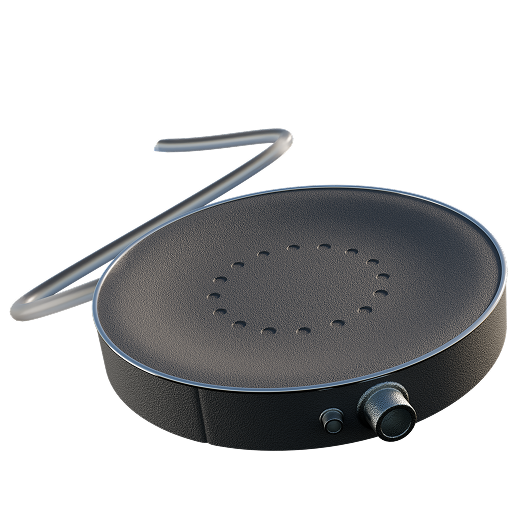
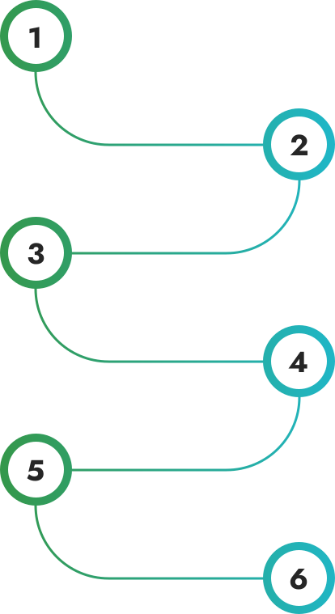
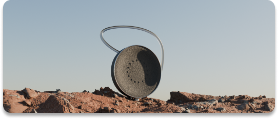
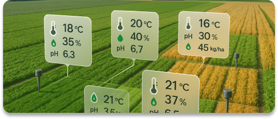
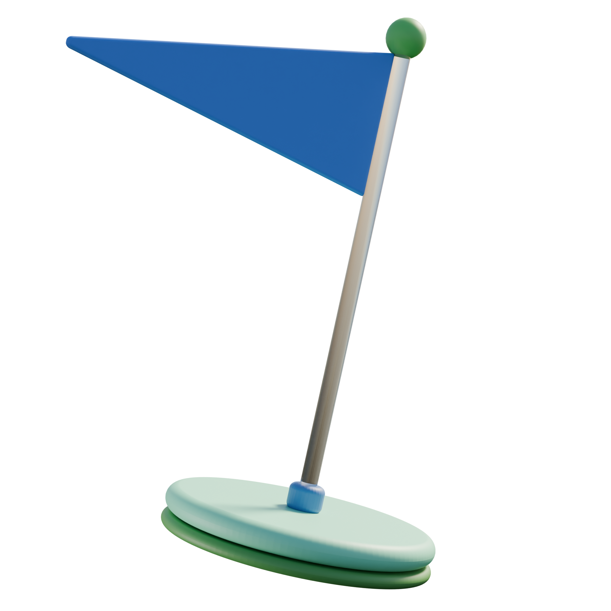

SoilSense
Технология умной почвы
Мы создаём умные устройства, которые помогают вам узнать, чем “дышит” земля. Просто поместите сенсор в
почву — и вы получите подробную картину её состояния: минералы, влажность, уровень питательных веществ.
Хотите больше — подключите систему подачи удобрений напрямую через устройство.

ЧТО МЫ ПРЕДЛАГАЕМ
КАК ЭТО РАБОТАЕТ
Вставь
Установите устройство в землю — быстро, просто, без инструментов.
Сканируй
Устройство начинает анализ: химический состав, влажность, pH и не только.
Получай советы
Вы получаете точные рекомендации, уведомления и прогнозы прямо в приложении.

Подключи
Откройте приложение или сайт и подключите сенсор за пару шагов.
Подкормка по запросу
При необходимости — подключите питание. SoilSense сам подскажет, чего не хватает.
Онлайн контроль
Следите за состоянием почвы наглядно — с графиками, метриками и историей изменений.
Полная инструкция по эксплуатации
О ПРОДУКТЕ
Частые пользователи

Контроль без усилий
Вам больше не нужно копаться в справочниках или на глаз определять, когда поливать или удобрять растения. Достаточно воткнуть сенсор в почву — и вся нужная информация появится в приложении: от текущей влажности и температуры до уровня кислотности. Устройство работает как для уличных участков, так и для теплиц и даже домашних растений.
SoilSense Home
Фермеры и агробизнес

Полный контроль
Система SoilSense отслеживает состояние почвы на разных участках поля в режиме реального времени. Температура, влажность, pH и содержание элементов — вы точно знаете, где и что происходит. Это особенно важно для тепличных комплексов и больших хозяйств, где без автоматизации легко упустить проблему. Устройство стабильно функционирует всегда.
SoilSense Pro
Мобильное
приложение
Вся информация о почве - прямо в телефоне
С помощью нашего приложения вы получаете полный контроль над состоянием земли на вашем участке — в реальном времени
Просто подключите устройство — и наблюдайте, как почва начинает «говорить».
Что вы можете делать в приложении:
- Отслеживать показатели почвы
Влажность, минералы, pH, температура — всё в графиках и таблицах. - Получать рекомендации
Приложение подскажет: полив, удобрение, корректировка состава. - Управлять питанием

Контролируйте подачу удобрений — вручную или автоматически. - Следить за динамикой
Сравнивайте данные по дням, неделям, сезонам. - Получать уведомления

Уведомит, если почва кислая или растению чего-то не хватает. - Работать в команде

Делитесь доступом с агрономами, коллегами или семьей.
Наша миссия
Наша миссия — сделать технологии анализа почвы доступными каждому: от крупного фермера до частного садовода. Мы стремимся к тому, чтобы земля использовалась с умом, уважением и заботой.
SoilSense помогает людям понимать, что нужно почве — и давать ей именно это. Без избыточных удобрений, без вреда экосистеме, с опорой на данные, а не догадки

FAQ
Остались вопросы?
Раздел с ответами на наиболее распространённые вопросы о наших устройствах: принципы работы, настройка, технические характеристики и совместимость. Здесь вы также найдёте информацию об условиях использования, гарантии и возможностях интеграции.
Если не нашли нужного ответа — обратитесь в службу поддержки.